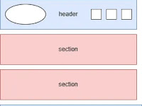
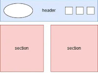

Subaru Valvebody solenoids
AWD AND Lockup Solenoids
This solenoids are most importance for performance and fuel conservation.When they malfunction,
Subaru vehicles enters fail safe mode,signals check lights i.e engine,AT Oil,traction,EYE Sight(for,
vehicles equiped with it).At this moment the car fuel consuption rises and power is reduced.
AWD Solenoid mostly affected is used to put the car into always all wheel. without it,
properly functioning the car only drives using power from front wheel and lack stability at the rear.
Lockup Solenoid on the other hand,is a Solenoid that locks the,
torque convertor clutch to avoid variator chain slippage.Just like AWD Solenoid ,
when Lockup Solenoid malfunction the stability of the vehicle is reduced
Site Purpose
The purpose of site plan document is to create awereness and grow positivity of subaru owners that, Subaru Cars area maintainable and gearbox parts manageble and can access them through , this site.To promote eco friendly education by helping Subaru owners how to keep thier machines running and not being hamful to the environment. The site will also provide detailed information about Subaru Valvebody and its solenoids and one can access them.
scenarios
- How do I make my Subaru be: more fuel economy,environment friendly and more affordable?
- How much is Subaru solenoids and how do I access them?
Color Schema
Below are the selected colors and their intented uses across the website:
Typography
The site will use the following fonts:
- Roboto
- Arial, Helvetica, sans-serif
Wireframe
Below is the wireframe for my home page in both mobule and wide-desktop layout
Mobile Wireframe

Desk top wireframe
